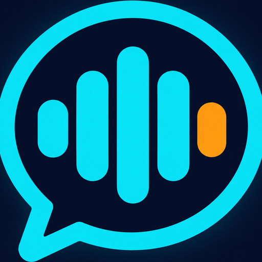
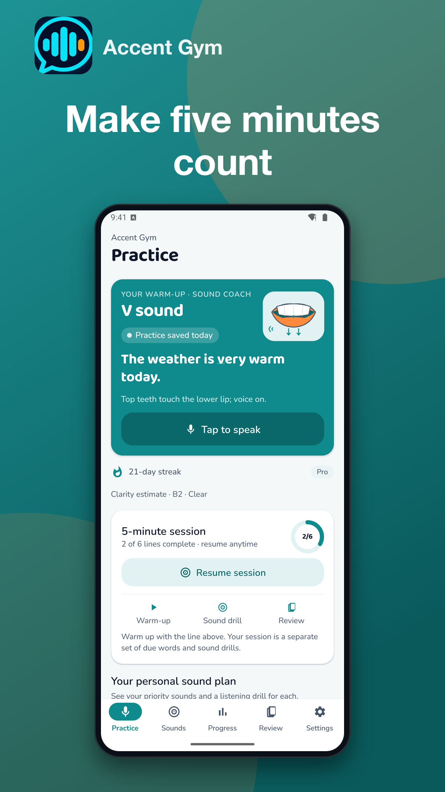
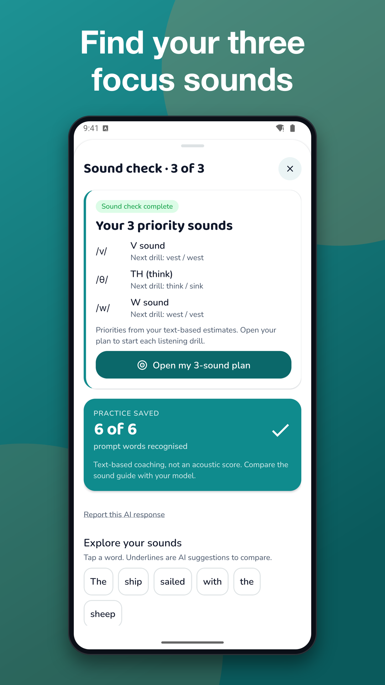
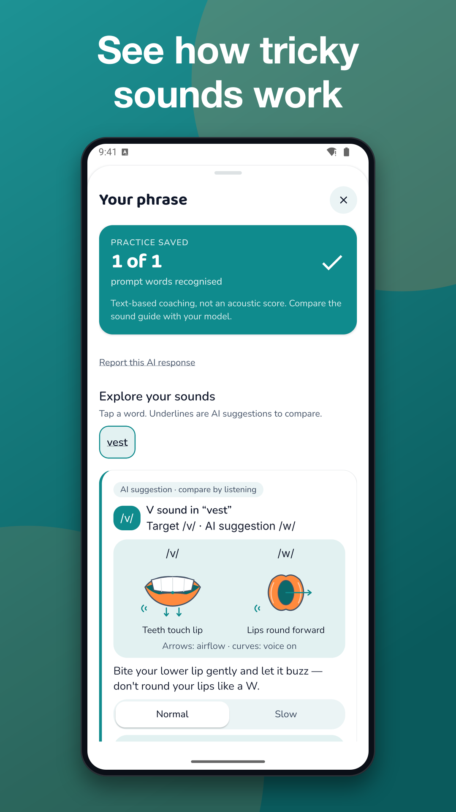
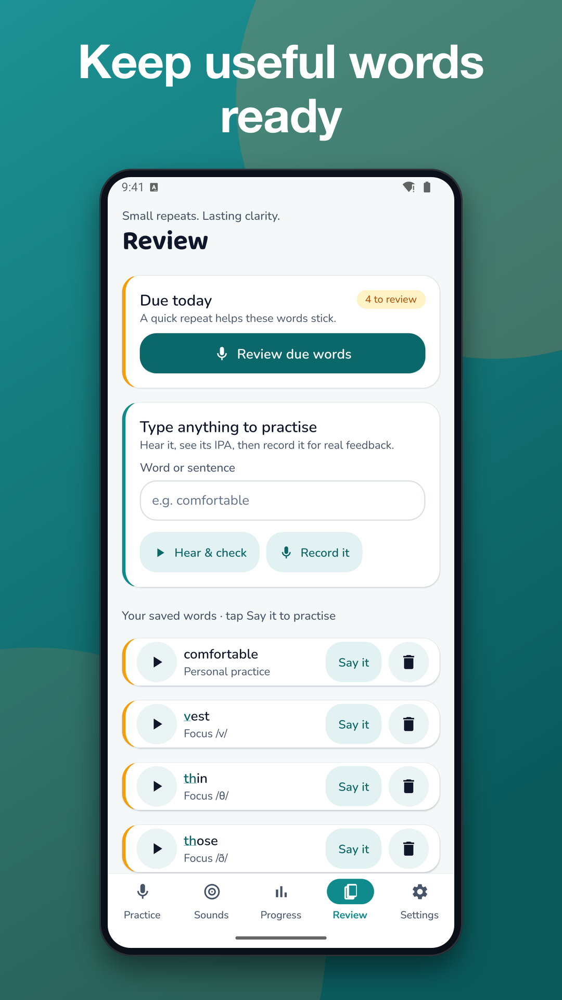
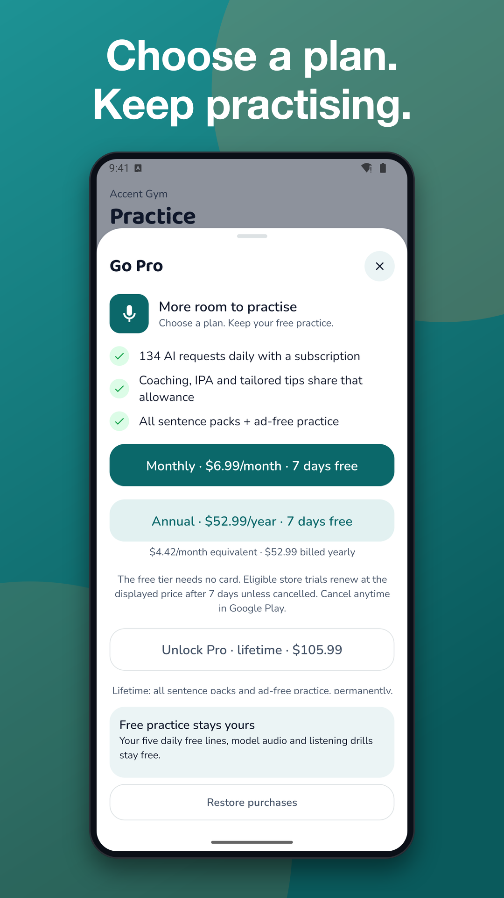

Accent Gym: Pronunciation
Pronunciation practice and accent training with speaking exercises and AI tips





Build an English pronunciation practice habit with speaking exercises and AI-generated guidance. Say your answer, review the recognized text and explore suggestions for your next attempt. Start using the core experience without creating an account.
PRACTISE SPEAKING, STEP BY STEP
• Answer a speaking exercise using your microphone.
• Review the text recognized from your speech.
• Use AI suggestions to guide your next attempt.
• Return to accent training with reminders you choose to enable.
UNDERSTAND THE FEEDBACK
Looking for a pronunciation checker? Understand what this version checks: your device turns speech into text, and AI guidance uses that transcript. It does not directly assess your recorded voice or measure individual speech sounds. Speech recognition can miss words, and AI suggestions can be inaccurate.
Use pronunciation practice as a chance to speak, review and try again. Feedback is a learning aid, not an official language assessment or a guarantee of clearer speech. This is an educational tool, not speech therapy or medical advice.
FREE ACCESS AND PAID OPTIONS
• Try the core speaking experience without signing in.
• The free version shows ads.
• Pro removes ads. A separate Remove Ads purchase is also available.
• Review the price, billing period and included benefits before purchasing. Manage subscriptions through your store account.
YOUR SPEECH AND DATA
The microphone is used only while you answer a speaking exercise. Speech is converted to text on your device; audio is never uploaded, stored or shared. AI features need an internet connection: the text you submit goes through our server to Anthropic for analysis and is not used for training.
Your entries stay on your device unless you choose optional cloud backup or sync. Sign in with an email code to back up your own entries. You can request account and associated server-data deletion in Settings → Account or through the web deletion page linked in the privacy policy.
The app collects anonymous, minimal usage analytics to improve the experience. The ad provider also collects advertising and diagnostic data. With notification permission, a device push token is registered with our server for reminders and updates. Every AI response includes a report control so you can flag a concern.
Make room for pronunciation practice today: open an exercise, speak and review your next step.
Support: jeets98e@gmail.com